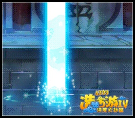

普通攻击
唐僧的普攻打断力高，范围大。特点一：打断力高，唐僧的一次攻击可攻击到1到3个小怪，打断几率是80%，特别高。特点二：范围大，唐僧的攻击可以攻击到屏幕70%的屏幕的范围，攻击距离是最远的，而且是打断的几率最高的，只要一边攻击一边走，走到墙角再跳跃向回走，自己一般不会被攻击到。但是，这是要一定的2段跳技术的，手残党只有哭的份了。注意千万不要没有魔，就靠近怪物群，不然，作死！使用操控唐僧要很高的技巧，使用手残党不要。
角色分类
唐僧是炮台型的，距离远就是无敌，距离近就无法攻击。
优点：攻击高，攻击特别高，魔高，有卡空技能（玄冰破）。有核子弹般的攻击的（水魔爆），只要距离远就再也不用怕小怪了。是五个（魔）中最有攻击力的（魔），（玄冰破）可以卡空，要是是一级的技能可以一边卡一边回魔，只要boss不是全屏攻击的基本可以当做boss攻击的死角。要是高等级唐僧的魔也可以撑一阵子，水魔爆也可以连续放好几次，特别是祖巫。
缺点：防御少，血量少，耗魔高，无法连击，走位技能只有大神才用的来，推荐使用者：大神级。原因：防御少，血量少，耗魔高，无法连击，走位技能放招慢。顺便提醒增加一倍的回魔。
总体解说
人物技能：前期较高，低生命低防御，魔不够，技能易打断，这个是缺点。不过不是我说啊，前期的boss的灵活性真心可怜啊，只要学会2段跳就只有被唐僧打哭的份了。而且还有超快速回魔技能。只是没有紧箍咒，不过前期的小怪不会难道哪里去。（我已经看到木巫哭晕在路边了）中期boss的灵活度高起来了，这个时候只会基本的2段跳，只有被boss虐的份了。这个时候，装备形成了，伤害加高了，不过魔还是不够用，所以要学会更高级的操作技术了。所以说是大神级用的角色。说说好处和坏处，坏处是后期的boss巫衣预测大约是，控制全场，就是芙蓉土巫这样的，还有灵活度高，攻击速度的boss这2种类，都是克死唐僧的类型，所以要极高的操作技巧。好处是攻击力高到可怕，要是有紧箍咒唐僧就几乎无敌了。
技能解析
1、玄冰阵
弯腰四十五度左手拍打地面，锥形冰块分2次冒出，有一点击退性。发招较慢，容易打断注意，使用好时机打断，容易被怪物群K，所以距离保持攻击距离。技能性价比较高，实用性中等，建议等级1级。（告诉大家一个秘密，只要会魔高于13就可以一直卡在天空回魔了。）
2、水幻影
角色摆出阿谜陀佛的的手势，仰角5度角出技能，可以模仿一些技能，如冰破、天降雨露，碰到一些技能会爆炸，如冰锥、水魔爆发招时容易被打断，所以还是要注意身边的怪物哦。不然还是会被群K的，被群K的话唐僧活不了多久。幻影可以当傀儡使用。爆炸可以造成伤害。（在后期只要会使用的话这个技能比悟空的火焰闪好用的多）注意：幻影出来，会走到屏幕边缘，然后在回来。使用要把握时间，这个比较难控制。建议3级，因为可以增加模仿技能威力，性比价高，实用性低。
3、寒冰锥
蓄力3秒后2收推进放出椭圆形冰锥,期间容易打段，蓄力时间中等，千万不要离小怪太近了。攻击距离特别特别远，有一点击退性，伤害中等。可以放一个幻影在使用冰锥这样可以加大伤害。建议满级因为不经常使用的关系，性比价中等，实用性中下等。
4、天降甘露
摆出阿谜陀佛手势，一只脚抬起使用技能。唐僧可以成为后期的霸主，一半就是因为这个技能，回血量高到可怕。这个技能会被打断，不过还是可以回血，还没有蓄力时间。血少的一定程度时，建议（叫个幻影在用回血技能）这样可以双回，性比价目前最高，实用度可比打招。建议满级。
5、水魔爆
双手抓住法杖，水魔爆不断前进，人物原地上升。召唤出一个法阵，法阵不停会向前移动，可以召水柱（水巫都偷学这个技能可见其威力啊）伤害可怕！注意技能容易被打断所以要把握时机哦。尽量离攻击范围远一点（技能发动是会不断升高）这高度可怕呀。可以打爆幻影，不过高到一点程度技能就会消失。所以要注意性比价高超级高……实用度也是一样。建议满级，因为唐僧魔多，水魔爆伤害高。
